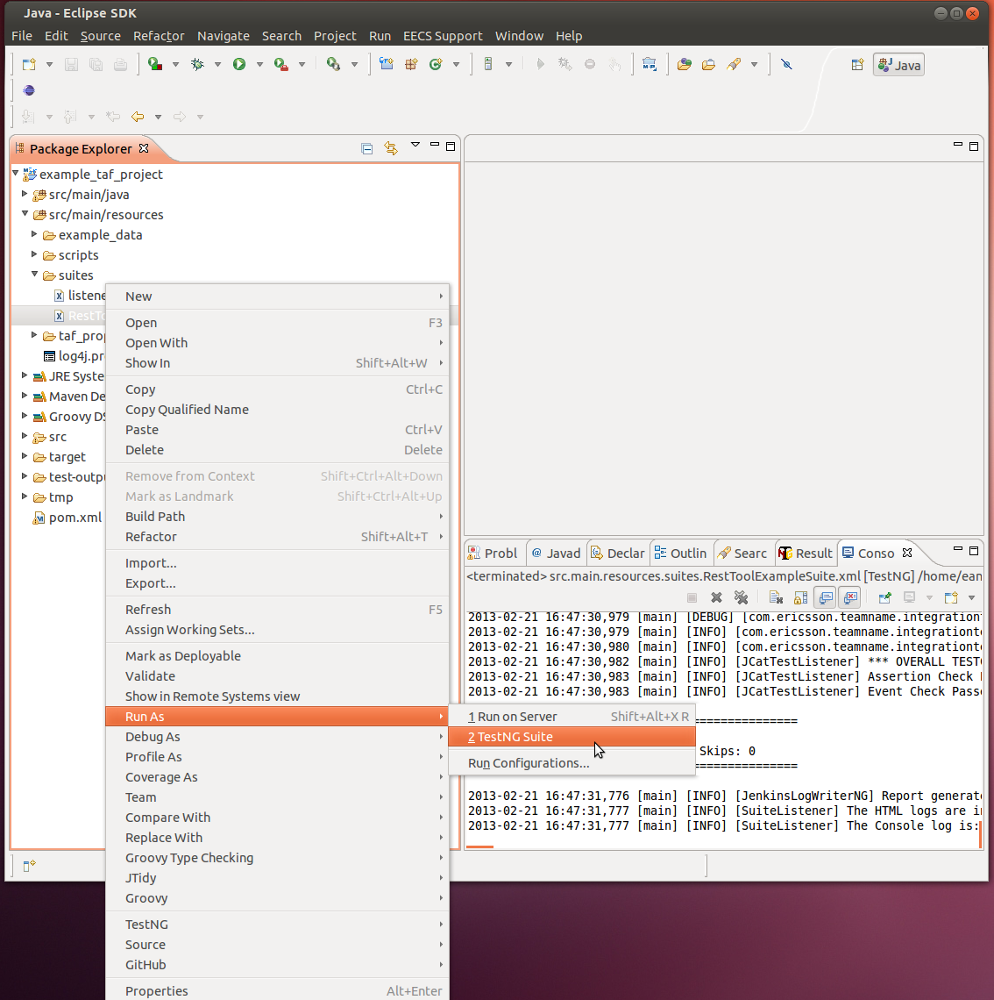

TAF-based project needs to be a Maven project with dependency to TAF. It is strongly recommended to use following convention:
- non business logic should be kept in com.ericsson.cifwk.taf packages - this logic will be incorporated inside TAF and delivered in TAF jar. Keeping it in these packages from begging, will remove any need for change later on.
- keep getters, operators and data in properly named packages - these packages will be shared with rest of community via TAF jar, but they namespace needs to be preserved in relation to their business logic
- keep test cases and test data in proper packages undesr test package - this part will not be shared with rest of the project teams or PDU
Following structure is created if com.ericsson.taffit:testcases archetype is used. To use it, invoke following command:
mvn archetype:generate -DarchetypeCatalog=https://arm1s11-eiffel004.eiffel.gic.ericsson.se:8443/nexus/content/repositories/snapshots/archetype-catalog.xml
https://arm1s11-eiffel004.eiffel.gic.ericsson.se:8443/nexus/content/repositories/snapshots/archetype-catalog.xml -> com.ericsson.teamname:example_taf_project-archetype (-)
Next interactively specify group and project id as well as project name and package name as per example below.
Define value for property 'groupId': : com.ericsson.teamname Define value for property 'artifactId': : example_taf_project Define value for property 'version': 1.0-SNAPSHOT: : 1.0.1-SNAPSHOT Define value for property 'package': com.ericsson.teamname: : Confirm properties configuration: groupId: com.ericsson.teamname artifactId: example_taf_project version: 1.0.1-SNAPSHOT package: com.ericsson.teamname Y: : Y
This will create following file structure:
./src/main/java/com/ericsson/teamname/integrationtest/operators/RestOperatorExampleOperatorActions.java ./src/main/java/com/ericsson/teamname/integrationtest/operators/rest/RestToolExampleRestOperator.java ./src/main/java/com/ericsson/teamname/integrationtest/operators/RestToolExampleOperator.java ./src/main/java/com/ericsson/teamname/integrationtest/data/RestToolExampleDataProvider.java ./src/main/java/com/ericsson/teamname/integrationtest/getters/rest/RestToolExampleRestGetter.java ./src/main/java/com/ericsson/teamname/integrationtest/test/cases/RestToolExample.java ./src/main/java/com/ericsson/teamname/integrationtest/test/data/RestToolExampleData.java ./src/main/resources/scripts/TafRun.groovy ./src/main/resources/example_data/exampledata.csv ./src/main/resources/log4j.properties ./src/main/resources/taf_properties/hosts.properties ./src/main/resources/taf_properties/examplemonitors.properties ./src/main/resources/taf_properties/rest_toolexample_host.properties ./src/main/resources/suites/RestToolExampleSuite.xml ./src/main/resources/suites/listeners.xml ./pom.xml
The project created can be ran directly by changing into the directory "example_taf_project" and running command:
mvn clean install
This will compile the project and run the dummy testcases.
To further understand this example you can examine the class diagram - Rest Example Overview
Furthermore if you import the project created above into eclipse you will be able to run it by right clicking on the "RestToolExampleSuite.xml" file in the the "src /main/resources/suites" folder and choose "Run As" -> "TestNG", as shown below.

Attachments:
{kind=link}
{kind=link}
Comments:
|
If your project directory structure in eclipse doesn't look correct the following steps will resolve this.
Everything should be hunky-dory in your eclipse now. |
|
When I tried to create the project by the steps provided in this page, only the structure and source folders in it are been created but no files i.e. .java or any other configuration files are not being created. |
|
Hi Trisandhya, That is strange. I'll walk through the steps on my machine to re-create the issue and get back to you with hopefully a solution. |